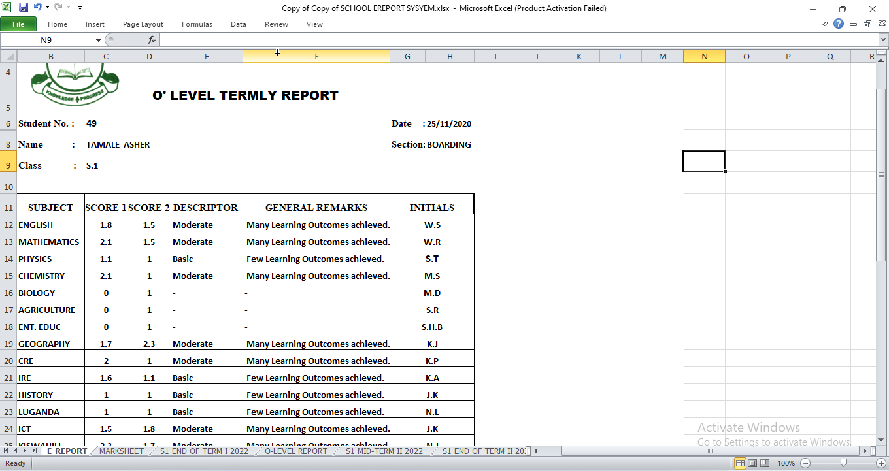
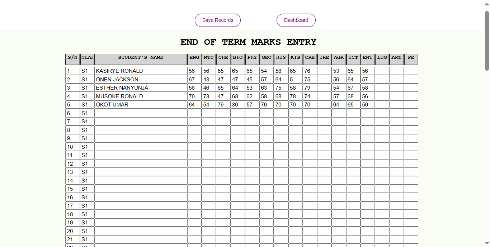
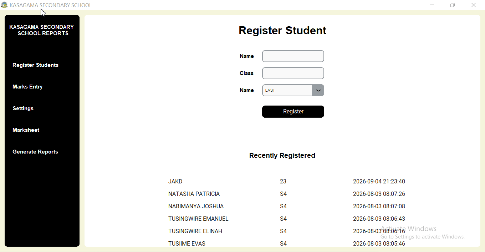
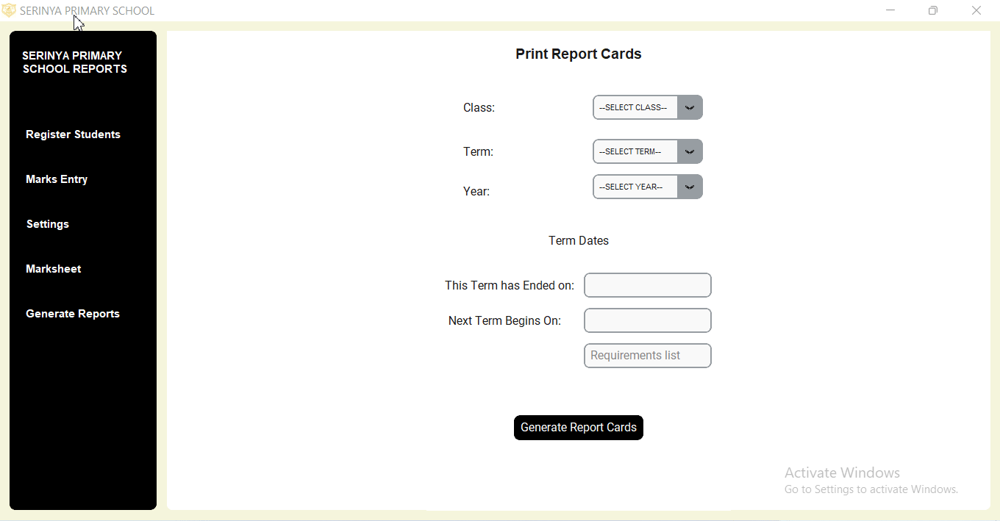

Shuleni's Journey.
Shuleni is an offline Report Card Software for Ugandan Secondary and Primary Schools. Unlike the majority of School report card systems, Shuleni doesn’t require an active internet connection. The software runs on an offline database locally on the school’s computers.
We decided to opt for an offline system after our research showed that most schools are remote, have no internet access, lack the luxury to subscribe to an online system, need an easy to use system, do not need the exaggerated number of modules that come with most online systems.
How we came up with Shuleni

Around 2020, we began experimenting with Shuleni, first as an Excel based application. We exploited Excel’s lookup functionality includingVLOOKUP, HLOOKUP and XLOOKUP. We also relied on mail merge, a functionality across the entire Microsoft Office suite.
We were starting by then and as such, the generated report cards were just basic. However, the reception was great. Parents loved the fact that there were no erasures, that the results were accurate. The headteacher appreciated the fact that this simple system saved a lot of time that would previously be spent on report card processing.
With time, the appearance of the report card improved. We worked on fonts, badge, margins, and the whole layout. But still, this was just Excel. We needed a real desktop application!
Shuleni Report card software for secondary schools

Our first experience with a real desktop application came in 2022. Using HTML, CSS and JavaScript, we designed the first version of Shuleni for desktop. This version was and is only available for Secondary schools.
Shuleni v1 accepts all students marks at once (just like excel) and stores them at a go. It has functionality for uploading custom school badge, deleting records for an entire class, wiping records for the entire system, specifying number of subjects done, mass generation of report cards, backup and restore of records, custom comments, initials among others.
We called this Shuleni Report Card Software for Secondary Schools. It’s available as an offline desktop application for Windows.
Shuleni Report card software version 2

In 2024, we once again decided to make an overhaul of Shuleni report card software. This was based on the feedback we kept receiving from our users. Schools kept requesting for a number of functionalities including Class Streams, Marksheet View, individual student registration, Subject-wise marks entry, and Comments selection from Drop-down. Users also complained about the huge size of the setup file and the resulting disk size taken.
This gave birth to the second version of Shuleni Report Card Software for Secondary Schools. This version of Shuleni was written in Python and SQLite used as database. It’s available as an offline desktop application for Windows.
This version addresses most if not all the requests of the users of Shuleni Version 1. It’s lightweight, loads very fast, registers individual students, has Stream functionality, marks entered by subject, has template comments that the headteacher or class teacher selects from, has functionality to delete an individual student’s entire record, and has marksheet view.
Shuleni Today
Today, Shuleni for Secondary Schools produces the most beautiful report cards by any standards. The layout, colors, margins, fonts, and tables have been carefully designed. Our report cards are well aligned, content is well spaced, sections are divided, and colors have been carefully contrasted to ensure easy readability.
Shuleni for Primary Schools

In 2025, we designed Shuleni Report Card Software for Primary schools. It’s available as an offline desktop application for Windows.
With Shuleni for primary schools, schools can register students, enter their marks by subject, view the marks in marksheet view, toggle settings, add custom comments or choose from template comments, set teacher initials, delete individual students, and generate batch report cards for entire classes.
The Team behind Shuleni Report Card Software
Over the years, the following people have been very instrunmental in the development of Shuleni.
- Kato Joseph
- Buseebwe Abdulrakibuh
- Kizza J. Mwanje
- Nfumba Joshua
- Ssematimba Brian
- Ssempagala Robert
Ready to get started??
Call or WhatsApp to get Shuleni setup for your school.